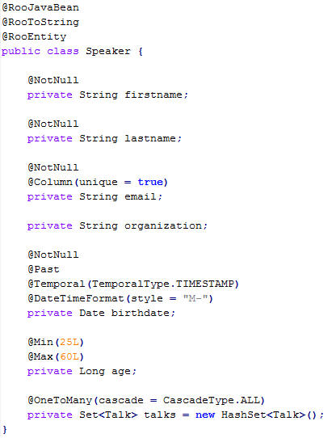
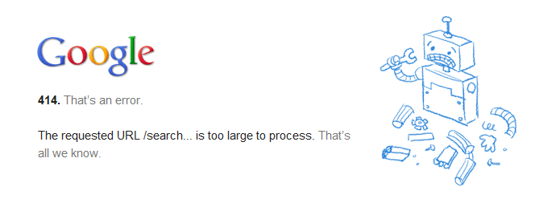
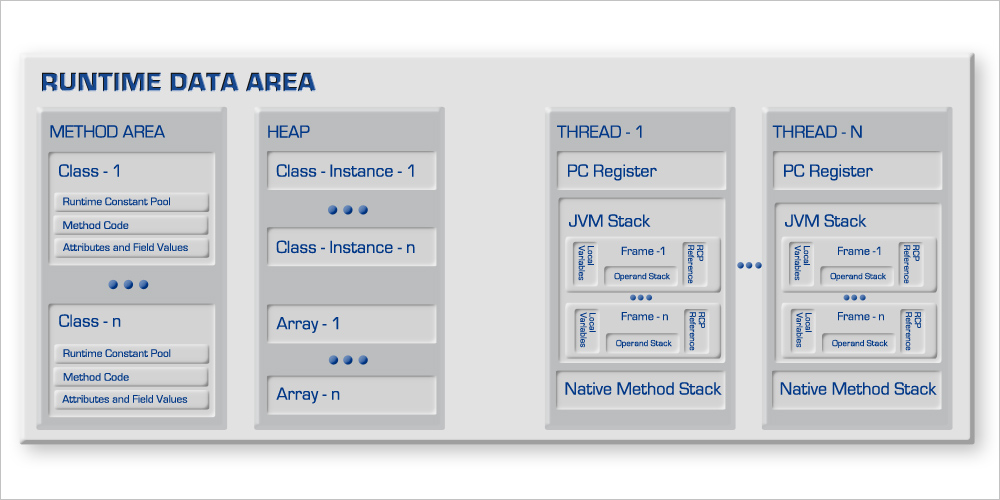

20111214
That on the other side the grass is greener.
20111206
20111202
Moon
20111130
Ruby method_missing
http://ruby-doc.org/docs/ProgrammingRuby/html/ref_c_object.html
20111129
20111123
find / -name \*.java | xargs grep a
grep a / -R
20111122
process-resource
Beans Cross References
20111119
AnnotationAwareAspectJAutoProxyCreator
Interceptor, Advice
public interface Interceptor extends Advice {
}
AutoProxyCreator
20111118
20111117
Advisor, Advice, Pointcut, Joinpoint
http://t1.gstatic.com/images?q=tbn:ANd9GcQ9Nx5N_NhDbit7XssEU8ip6dsw3p4yR8UmqOiaU6jxIkK689DfRpf7gOIp
org.springframework.aop.support.DefaultPointcutAdvisor
<bean name="pointcut.advisor1" class="org.springframework.aop.support.DefaultPointcutAdvisor">
<property name="advice" ref="interceptorA"/>
<property name="pointcut" ref="controller.handle.pointcut"/>
</bean>
http://www.javalobby.org/java/forums/t44746.html
NamespaceHandler
/ehcache-spring-annotations-parent/core/src/main/resources/META-INF/spring.handlers
http\://ehcache-spring-annotations.googlecode.com/svn/schema/ehcache-spring=com.googlecode.ehcache.annotations.config.AnnotationDrivenEhCacheNamespaceHandler
20111115
Maven version format
<major version>.<minor version>.<incremental version>-<qualifier>
http://toby.epril.com/?p=610
20111110
불규칙과 예외에 적응 못하며...
http://www.yes24.com/24/goods/5744517
20111107
Picasa
Battle Without Honor or Humanity
http://www.neatorama.com/2011/11/05/teddy-bear-bread/
20111105
http://canonblogs.com/13
AE: Auto Exposure
CCD: Charge-Coupled Device
AP: Aperture Value
TP: Time Value
AF: Auto Focus
MF: Manual Focus
CA: Create Auto
20111104
3 idiots
20111102
Kill Bill
20111101
http://en.fishki.net/comment.php?id=99791
Roo
http://gordondickens.com/images/Logo_SpringRoo.png

20111027
Ferret
http://true-wildlife.blogspot.com/2011/02/ferret.html
Charles Darwin
It is not the strongest of the species that survives,
nor the most intelligent that survives.
It is the one that is the most adaptable to change.
http://geekdays.com/02/12/darwin-day/
http://dev.paran.com/2011/10/13/why-guardian-chose-mongodb/
20111024
좀 긴 이름 - NAMING_POLICY_THAT_ALLOWS_IMPOSTERISATION_OF_CLASSES_IN_SIGNED_PACKAGES
private static final NamingPolicy NAMING_POLICY_THAT_ALLOWS_IMPOSTERISATION_OF_CLASSES_IN_SIGNED_PACKAGES = new MockitoNamingPolicy() {
@Override
public String getClassName(String prefix, String source, Object key, Predicate names) {
return "codegen." + super.getClassName(prefix, source, key, names);
}
};
http://rhs.softwarerevolution.com/auto-docs/portals/frostwire/java/html-frostwire-java/org/jmock/lib/legacy/ClassImposteriser.java/source/SOURCE-ClassImposteriser.java.html
Shale을 왜 "혈암"이라 하는가?
http://academic.naver.com/view.nhn?doc_id=39182106
Generic Programming
In a broad definition, generic programming is a style of computer programming
in which algorithms are written in terms of to-be-specified-later types
that are then instantiated when needed for specific types provided as parameters.
http://en.wikipedia.org/wiki/Generic_programming
Agnostic
http://krdic.daum.net/dickr/contents.do?offset=A018289100&query1=A018289100#A018289100
20111023
The Pacific
20111020
The Cambrian explosion happened in the sea
in an Age of Invertebrates at maximum diversity.
Tryin' on every kind of body-plan,
the fossils tell this tale;
the dominant types were the trilobites
You can see them in the Burgess Shale.
Five forty-five million years ago
to kick-off the Paleozoic
we see sea-shells by the sea-floor
Hi, Pikiai my backbone kin
Opabinia, how've ya been?
We don't get to see you anymore.
The Cambrian explosion
All life is in the occean.
The Cambrian explosion
All life is in the occean.
Ol' Marella was a rare find
for Walcott when it blocked his way
Hallucigenia had plenty of style
but that phylum's not alive today
Beware of Anomalocaris
if you're any other swimmer in the reef
The tree of life was so much bushier then
and it happened in a time so brief
Five forty-five million years ago
to kick-off the Paleozoic
we see sea-shells by the sea-floor
Hi, Pikiai my backbone kin
Opabinia, how've ya been?
We don't get to see you anymore
The Cambrian explosion
All life is in the ocean.
The Cambrian explosion
All life is in the ocean.
20111019
Film Grenade
http://bldgblog.blogspot.com/2011/10/film-grenade.html
20111017
M577 Armoured Personnel Carrier - Alien2
http://forum.halomaps.org/index.cfm?page=topic&topicID=36295
http://bruce-domain.blogspot.com/2011/02/looking-back-at-aliens-armoured.html
20111007

Leakhunter
20111006
Alien
Steve Jobs
20111005
http://cartoon.media.daum.net/webtoon/viewer/13599
20110930
http://www.samsung.com/sec/consumer/it/harddiskdrives/ssd/MZ-5PA128C/KR/index.idx?pagetype=prd_detail&tab=gallery
20110929
( ^ㅁ^)乃
Private network
http://en.wikipedia.org/wiki/Private_network
IETF
LIGHTTPD
http://rm-rf.es/wp-content/uploads/2011/05/lighttpd.png
20110927
jstack `jps | grep Bootstrap | awk '{print $1}'`
20110922
PHB - Pointy-Haired Boss
GallopBook
Can you gallop like a horse?
Can you strut like a rooster?
Can you run like a dog?
Can you spring like a cat?
Can you soar like an eagle?
Can you swing like a chimp?
Can you flutter like a butterfly?
Can you swim like a turtle?
20110921
Inglourious Basterds - HANS LANDA, Christoph Waltz
UDK
http://www.udk.com/features
20110919
Unity3
Game Engines
jmonkeyengine, unity, libgdx, andengine
20110916
ImageMagick v6 Examples -- Advanced Techniques
convert -size 170x100 xc:black ^
-fill white -draw "circle 50,50 13,50" ^
-draw "circle 120,50 157,50" ^
-draw "rectangle 50,13 120,87" ^
-fill black -draw "circle 50,50 25,50" ^
-draw "circle 120,50 145,50" ^
-draw "rectangle 50,25 120,75" ^
-fill white -draw "circle 60,50 40,50" ^
-draw "circle 110,50 130,50" ^
-draw "rectangle 60,30 110,70" ^
-gaussian 1x1 +matte logo_mask.png
convert logo_mask.png +clone +matte -compose CopyOpacity -composite ^
-fill red -colorize 100% ^
-font Candice -pointsize 36 -fill white -stroke black ^
-gravity Center -annotate 0 "Ant" ^
logo.png
convert logo_mask.png -blur 0x4 -blur 0x4 -blur 0x4 +matte logo_spread.png
convert logo_spread.png -shade 110x0 -normalize logo_light.png
convert logo_spread.png -shade 110x180 -normalize logo_dark.png
convert ( logo_light.png -negate ^
-background white -channel A -combine +channel ) ^
( logo_dark.png -negate ^
-background black -channel A -combine +channel ) ^
-compose Over -composite logo_lighting.png
convert logo.png logo_lighting.png -compose ATop -composite logo_3D.png
convert logo_3D.png -channel A -blur 0x6 +channel -fill navy -colorize 100% logo_shadow.png
convert logo_3D.png -background none -gravity SouthEast -splice 6x6+0+0 logo_shadow.png -compose Dst_Over -composite logo_final.png
http://www.imagemagick.org/Usage/advanced/
Prince of Persia
http://retrog.net/entry/princeofpersia1
MemoryTester
20110914
machinarium
http://machinarium.net
20110831
20110830
어쿠스틱 라이프
http://cartoon.media.daum.net/webtoon/view/acoustic
Remote System Explorer
Android Terminology
DDMS - Dalvik Debug Monitoring Service
APK - Applicaiton PacKage file
DEX - Dalvik EXecutable Format
AVD - Android Virtual Device
DPI - Dot Per Inch
ABI - Application Binary Interface
armeabi - ARM Embedded Application Binary Interface
ADT - Android Development Tools plugin
ADB - Android Debug Bridge
Android Version
Name
Cupcake
Donut
Eclair
Froyo
Gingerbread
Honeycomb
Ice-Cream Sandwich
Android Version
1.5
1.6
2.0
2.2
2.3
3.0
4.0
API Level
API Level 3
API Level 4
API Level 5,6,7
API Level 8
API Level 9,10
API Level 11,12,13
API Level 14
Linux Kernel Version
2.6.27
2.6.29
2.6.29
2.6.32
2.6.35
Release Date
2009-04-30
2009-09-15
2009-10-26
2010-05-20
2010-12-06
2011-02-24
http://ko.wikipedia.org/wiki/%EC%95%88%EB%93%9C%EB%A1%9C%EC%9D%B4%EB%93%9C_(%EC%9A%B4%EC%98%81_%EC%B2%B4%EC%A0%9C)
20110829
KEIKO MIZUKOSHI
눈을 감을때에도 내가 걱정됐나요
또 눈물겨웠나요 나를 지켜주지 못해
처음부터 끝까지 날 울리는 그대는
세상과 영원넘어 내게는 하나인걸
그래도 못내 떠나기가 그렇게 서러웠다면
웃어요 그래도 웃어요 눈부신 날을 꿈꾸며
too far away 하지만 참아야해 far away
따뜻한 햇살에도 이렇게 쓸쓸하고 시려울때도
too far away 조금만 더 기다려 far away
우리가 다시 태어나지 않을 영원속에 만날때까지
http://pann.nate.com/video/216232716
20110819
throne thorn
http://sungmooncho.com/2011/05/21/my-favorite-videos/
장자원유원지
일영유원지
일영그린랜드
마장저수지
기산저수지
유일레져타운
20110816
20110812
copycats from below evangelion sign images.
http://www.flickr.com/photos/29694841@N05/2779425582/
20110811
http://bluestreak2.wordpress.com/2008/11/30/old-vs-new-nerv-logo-in-you-are-not-alone/
How to get the invoked method in the interceptor. - Spring 3.0.2
Below code is experimental and version-dependent.
import java.lang.reflect.Method;
import javax.servlet.ServletContext;
import javax.servlet.http.HttpServletRequest;
import javax.servlet.http.HttpServletResponse;
import org.springframework.web.context.WebApplicationContext;
import org.springframework.web.context.support.WebApplicationContextUtils;
import org.springframework.web.servlet.FrameworkServlet;
import org.springframework.web.servlet.HandlerInterceptor;
import org.springframework.web.servlet.ModelAndView;
import org.springframework.web.servlet.mvc.annotation.AnnotationMethodHandlerAdapter;
public class ResolveHandlerMethodInterceptor implements HandlerInterceptor {
public final static String HANDLER_METHOD = "handlerMethod";
// Here is your servlet name
public final static String SERVLET_NAME = "XXXXX";
@Override
public void postHandle(HttpServletRequest request, HttpServletResponse response, Object object, ModelAndView modelAndView) throws Exception {
Method handlerMethod = (Method) request.getAttribute(HANDLER_METHOD);
System.out.println("postHandle>>>" + handlerMethod);
}
@Override
public void afterCompletion(HttpServletRequest request, HttpServletResponse response, Object object, Exception exception) throws Exception {
Method handlerMethod = (Method) request.getAttribute(HANDLER_METHOD);
System.out.println("afterCompletion>>>" + handlerMethod);
}
@Override
public boolean preHandle(HttpServletRequest request, HttpServletResponse response, Object object) throws Exception {
ServletContext servletContext = request.getSession().getServletContext();
String attrName = FrameworkServlet.SERVLET_CONTEXT_PREFIX + SERVLET_NAME;
WebApplicationContext context = WebApplicationContextUtils.getWebApplicationContext(servletContext, attrName);
AnnotationMethodHandlerAdapter adapter = context.getBean(AnnotationMethodHandlerAdapter.class);
Method getMethodResolverMethod = adapter.getClass().getDeclaredMethod("getMethodResolver", Object.class);
getMethodResolverMethod.setAccessible(true);
Object servletHandlerMethodResolver = getMethodResolverMethod.invoke(adapter, object);
Method resolveHandlerMethod = servletHandlerMethodResolver.getClass().getMethod("resolveHandlerMethod", HttpServletRequest.class);
resolveHandlerMethod.setAccessible(true);
Method handlerMethod = (Method) resolveHandlerMethod.invoke(servletHandlerMethodResolver, request);
request.setAttribute(HANDLER_METHOD, handlerMethod);
System.out.println("preHandle>>>" + handlerMethod);
return true;
}
}
http://toby.epril.com/?p=934
http://www.jarvana.com/jarvana/view/org/springframework/spring-webmvc/3.0.2.RELEASE/spring-webmvc-3.0.2.RELEASE-sources.jar!/org/springframework/web/servlet/mvc/annotation/AnnotationMethodHandlerAdapter.java?format=ok
http://stackoverflow.com/questions/4881499/spring-annotationmethodhandleradapter-and-annotation-reading-interceptors
20110810
http://coloringpagesforkids.info/pooh-coloring/
20110805
http://en.wikipedia.org/wiki/Phylum
20110804
Solaris
http://blog.naver.com/leonjuhee?Redirect=Log&logNo=150045452405
20110803
http://www.macrumors.com/2011/08/01/apples-icloud-com-error-pages-have-personality/
20110802
Apoptosis, Necrosis, Central Dogma, Geo Front, Terminal Front
http://www.fotolog.com/cibercito/38950480
http://hightempla.blog.me/90075660571
20110729
Skip List
http://www.slideshare.net/jongwookkim/skip-list
20110728
http://www.wiki-cine.com/photo-7066-hugo-weaving-james-mcteigue-photo--v-pour-vendetta.html
20110726
20110725
Java.c - Java come form here.
hotspot/src/share/tools/launcher/java.c
Calling Java From C
1. Create The Execution Environment
2. Load the JVM dynamically
3. Prepare JVM runtime options based on clmmand-line options passed to the launcher
4. Create JVM.
5. Load the target class into the JVM by calling JNI FindClass() method
6. Call the main method of the target class
7. Shutdown the JVM
http://simulasoa.tistory.com/172
20110722
http://www.slideshare.net/novathinker/2-runtime-data-areas
20110719
http://pragmaticstory.com/1766
20110716
http://blogs.discovermagazine.com/discoblog/2008/04/04/bacteria-survive-on-all-antibiotic-diet/
20110715
20110712
20110708
The JVM is a stack maschine!

http://blog.codecentric.de/en/2010/01/the-java-memory-architecture-1-act/
http://www.androidside.com/plugin/mobile/board.php?bo_table=B46&wr_id=13251&sca=%C3%CA%C5%A9%B8%AE%BD%BA%B4%D4+%C0%DA%B9%D9%B0%AD%C1%C2
http://blog.naver.com/PostView.nhn?blogId=wizblue&logNo=30088624594&redirect=Dlog&widgetTypeCall=true
20110706
http://cache.springnote.com/pages/7835156
http://yozm.daum.net/mytune/image/imageSlider?t__nil_livedaum=yozm_img&nil_id=1#id=65745271&order=0
20110705
20110704
ASM
http://asm.ow2.org/
Java Instrument
http://blog.naver.com/ukja?Redirect=Log&logNo=120041273574
BTrace
http://blog.igorminar.com/2008/06/btrace-dtrace-for-java.html
20110630
http://blog.naver.com/PostView.nhn?blogId=songhwo&logNo=30094667131&parentCategoryNo=12&viewDate=¤tPage=1&listtype=0
http://www.businessinsider.com/big-tech-org-charts-2011-6?utm_source=feedburner&utm_medium=feed&utm_campaign=Feed%3A+typepad%2Falleyinsider%2Fsilicon_alley_insider+%28Silicon+Alley+Insider%29
20110628
MAT(Memory Analyzer Tool), Heap Dump Analyzer
http://www.eclipse.org/mat/
OQL
20110627
nmap -p 1-65535 -sT localhost
http://www.leopit.com/Leophp/board/lecture_board/view.php?id=74&board_mode=linux
rmiregistry 1099 &
jstatd -J-Djava.security.policy=jstatd.all.policy -p 1099 &
jhat -J-Xmx512m heap.hprof
GC
http://blog.bielu.com/2009/07/visual-vm-java-tool-you-were-waiting.html
20110625
CMS ParNew (promotion failed)
XX:+CMSIncrementalMode
http://devday.tistory.com/entry/CMS-ParNew-promotion-failed-%EB%B0%9C%EC%83%9D-%ED%9B%84-Old-Generation-GC%EA%B0%80-%EB%90%98%EC%A7%80-%EC%95%8A%EB%8A%94-%EC%9D%B4%EC%8A%88
UseConcMarkSweepGC is "ParNew" + "CMS" + "Serial Old". "CMS" is used most of the time to collect the tenured generation. "Serial Old" is used when a concurrent mode failure occurs
http://blogs.oracle.com/jonthecollector/entry/our_collectors
Garbage Collection
http://ryudaewan.springnote.com/pages/145343
http://wiki.ex-em.com/index.php/Concurrent_GC
http://wiki.ex-em.com/index.php/JVM_Options
NewRatio
http://pwk777.egloos.com/4923409
ParNew (promotion failed): This means that your old generation has become fragmented and the data from Eden might not fit into a large enough contiguous chunk in old.
(concurrent mode failure): The GC predicts that the CMS collection will not complete in time before the Old generation becomes full. It aborts the run and does a stop-the-world instead.
Diagnosing a Garbage Collection problem
http://java.sun.com/docs/hotspot/gc1.4.2/example.html
20110624
Java Generic
http://www.coderfriendly.com/2009/05/09/evolving-the-java-language-generics-were-hard-to-implement/
20110621
20110618
JQuery is REALLY REALLY God.
Triple equals in Javascript
if ( typeof selector === "string" ) {
...
}
http://longgoldenears.blogspot.com/2007/09/triple-equals-in-javascript.html
20110612
http://shinandhong.com/wp-content/uploads/2011/01/ted_logo2.png
20110528
car interior panorama
http://bigeyeinthesky.com/View.asp?ID=217&CID=Vehicles
http://www.evoximages.com/products/360-interior-panoramas
http://www.360cities.net/image/lancia-thesis-car-interior-panorama#420.48,2.08,71.1
http://www.carpanorama.eu/pano/mercedes-250SL-brown/index.html
http://www.internetmap.kr/835
http://www.cubicpan.com/
http://www.vr-net.co.kr/vr/portfolio/vr/kia_motors/k7/vr.html
20110527
The water shrew
20110526
20110524
speedtest.net
20110524
Stackoverflow Chat
Lombok
http://projectlombok.org/
Javac And Lombok
http://notatube.blogspot.com/2010/12/project-lombok-creating-custom.html
20110522
http://www.techfreakstuff.com/2010/07/iphone-5-leaked-screenshot.html
20110520
20110519
jaxb
http://jaxb.java.net/tutorial/
20110518
Linked List In Java Images: Implementing Doubly-Linked Lists
java 1.4 public class LinkedList
extends AbstractSequentialList
implements List, Cloneable, Serializable
java 1.5 public class LinkedList
extends AbstractSequentialList
implements List, Queue, Cloneable, Serializable
java 6 public class LinkedList
extends AbstractSequentialList
implements List, Deque, Cloneable, Serializable
http://connect.in.com/linked-list-in-java/images-implementing-doublylinked-lists-1-692574106586.html
Escher
20110516
Thread Dump Analysis Tool
Samurai TDA 20110511
Android
http://maps.google.co.kr/maps/mm?hl=en&sll=37.424363,-122.096431&sspn=0.006295,0.006295&ttype=dep&date=05%2F11%2F11&time=18:54&noexp=0&noal=0&sort=def&t=h&ll=37.420205,-122.083741&spn=0.001047,0.00142&z=20
It's a little pity there wasn't gingerbread, honeycomb, ice cream sandwich.
http://www.panoramio.com/photo/32111059
20110507
Great article it worked exactly like given.
http://www.michael-noll.com/tutorials/running-hadoop-on-ubuntu-linux-single-node-cluster/
20110506
Data Art Team
20110502
Journaling File System
http://www.howtogeek.com/howto/33552/htg-explains-which-linux-file-system-should-you-choose/
20110426
Amazon Elastic Compute Cloud (Amazon EC2)
Amazon Simple Storage Service (Amazon S3)
20110420
20110412
JQuery Tools 1.2
http://flowplayer.org/tools/release-notes/
20110408
http://www.christiedigital.com/en-us/video-walls/video-wall-and-control-room-case-studies/video-wall-and-control-room-installations/pages/att-telecommunications-video-wall-ensures-continuity-reduces-cost-video-wall-solution.aspx
20110404
Spring MVC Diagram(3.0.2)
20110403
My Baby
20110401
20110331
Thanks
20110330
20110328
http://ehcache.org/
http://code.google.com/p/ehcache-spring-annotations/
20110325
cat /proc/cpuinfo
getconf LONG_BIT
getconf _NPROCESSORS_CONF
^(.+)$
"\1"
ps -ef | grep httpd | awk '{print $2}' | xargs kill -9
ps -ef | grep httpd | awk '{x += $2}; END {print x}'
find / -type f -atime +30 -exec rm {} \;
RewriteEngine on
RewriteRule ^/$ /index [R=301,L]
20110301
\relative c' {
\clef treble
c1
\clef alto
c1
\clef tenor
c1
\clef bass
c1
}
20110226
20110225
20110223
Notepad++
20110217
highcharts
20110213
20110211
20110202
Ave Maria, gratia plena
Dominus tecum
Benedicta tu in mulieribus
et benedictus fructus ventris tuis Jesus.
Sancta Maria, Sancta Maria, Maria
Ora Pro nobis
Nobis peccatoribus
Nunc et in hora, in hora mortis nostrae
Amen. Amen.
20110121
20110104
Matthew
http://m.todayhumor.co.kr/view.php?table=bestofbest&no=60480 http://todayhumor.co.kr/board/view.php?kind=todaybest&table=humorbest&no=411625

http://www.ietf.org/images/ietflogotrans.gif


 copycats from below evangelion sign images.
http://www.flickr.com/photos/29694841@N05/2779425582/
copycats from below evangelion sign images.
http://www.flickr.com/photos/29694841@N05/2779425582/
 http://coloringpagesforkids.info/pooh-coloring/
http://coloringpagesforkids.info/pooh-coloring/
.jpg)
 http://www.businessinsider.com/big-tech-org-charts-2011-6?utm_source=feedburner&utm_medium=feed&utm_campaign=Feed%3A+typepad%2Falleyinsider%2Fsilicon_alley_insider+%28Silicon+Alley+Insider%29
http://www.businessinsider.com/big-tech-org-charts-2011-6?utm_source=feedburner&utm_medium=feed&utm_campaign=Feed%3A+typepad%2Falleyinsider%2Fsilicon_alley_insider+%28Silicon+Alley+Insider%29
 UseConcMarkSweepGC is "ParNew" + "CMS" + "Serial Old". "CMS" is used most of the time to collect the tenured generation. "Serial Old" is used when a concurrent mode failure occurs
http://blogs.oracle.com/jonthecollector/entry/our_collectors
Garbage Collection
http://ryudaewan.springnote.com/pages/145343
http://wiki.ex-em.com/index.php/Concurrent_GC
http://wiki.ex-em.com/index.php/JVM_Options
NewRatio
http://pwk777.egloos.com/4923409
ParNew (promotion failed): This means that your old generation has become fragmented and the data from Eden might not fit into a large enough contiguous chunk in old.
(concurrent mode failure): The GC predicts that the CMS collection will not complete in time before the Old generation becomes full. It aborts the run and does a stop-the-world instead.
Diagnosing a Garbage Collection problem
http://java.sun.com/docs/hotspot/gc1.4.2/example.html
UseConcMarkSweepGC is "ParNew" + "CMS" + "Serial Old". "CMS" is used most of the time to collect the tenured generation. "Serial Old" is used when a concurrent mode failure occurs
http://blogs.oracle.com/jonthecollector/entry/our_collectors
Garbage Collection
http://ryudaewan.springnote.com/pages/145343
http://wiki.ex-em.com/index.php/Concurrent_GC
http://wiki.ex-em.com/index.php/JVM_Options
NewRatio
http://pwk777.egloos.com/4923409
ParNew (promotion failed): This means that your old generation has become fragmented and the data from Eden might not fit into a large enough contiguous chunk in old.
(concurrent mode failure): The GC predicts that the CMS collection will not complete in time before the Old generation becomes full. It aborts the run and does a stop-the-world instead.
Diagnosing a Garbage Collection problem
http://java.sun.com/docs/hotspot/gc1.4.2/example.html
 http://notatube.blogspot.com/2010/12/project-lombok-creating-custom.html
http://notatube.blogspot.com/2010/12/project-lombok-creating-custom.html
 http://jaxb.java.net/tutorial/
http://jaxb.java.net/tutorial/


 http://lilypond.org/doc/v2.12/Documentation/user/d1/lily-1b80f55d.png
http://lilypond.org/doc/v2.12/Documentation/user/lilypond-learning-big-page.html
http://lilypond.org/doc/v2.12/Documentation/user/d1/lily-1b80f55d.png
http://lilypond.org/doc/v2.12/Documentation/user/lilypond-learning-big-page.html